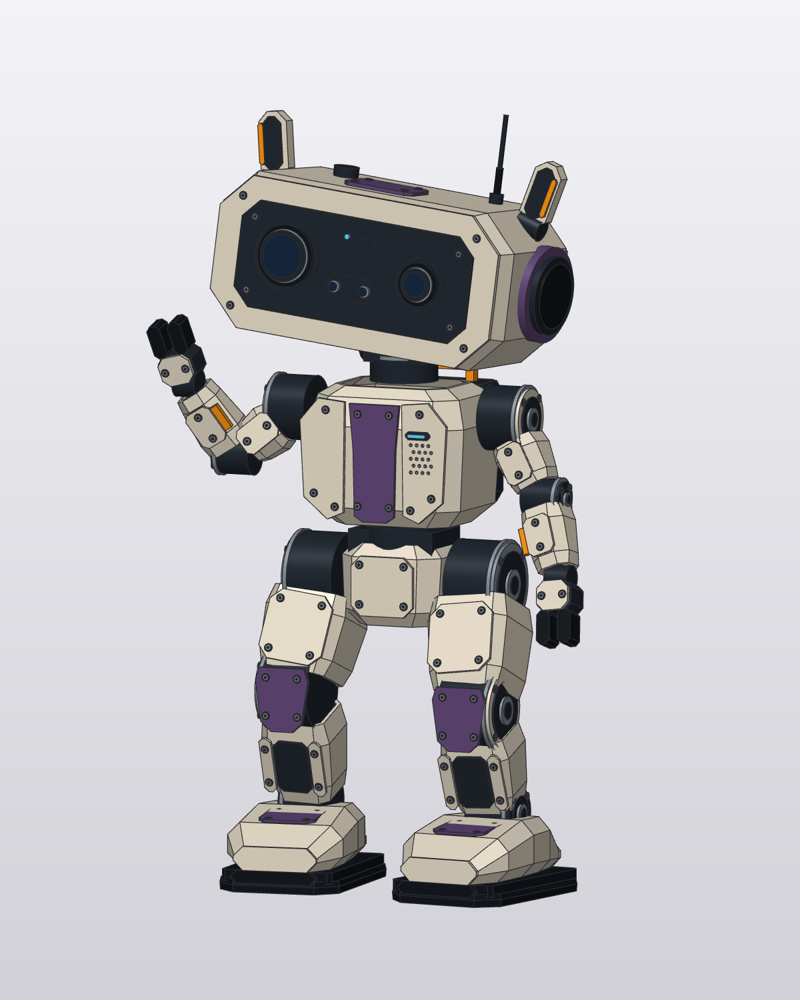
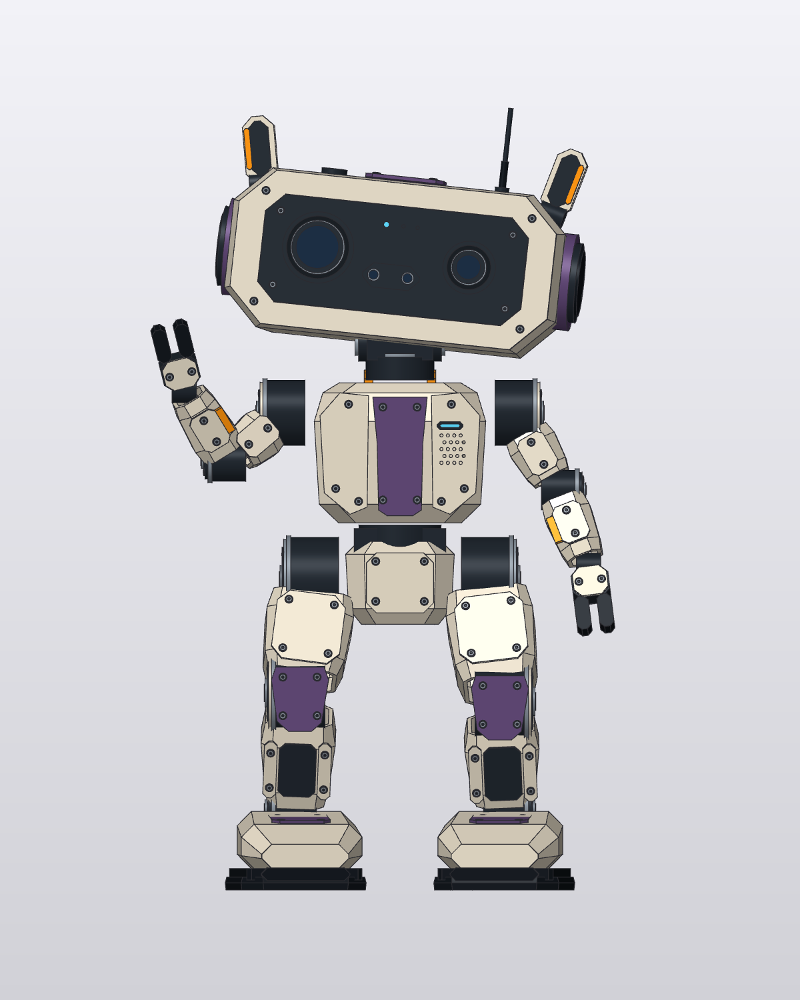
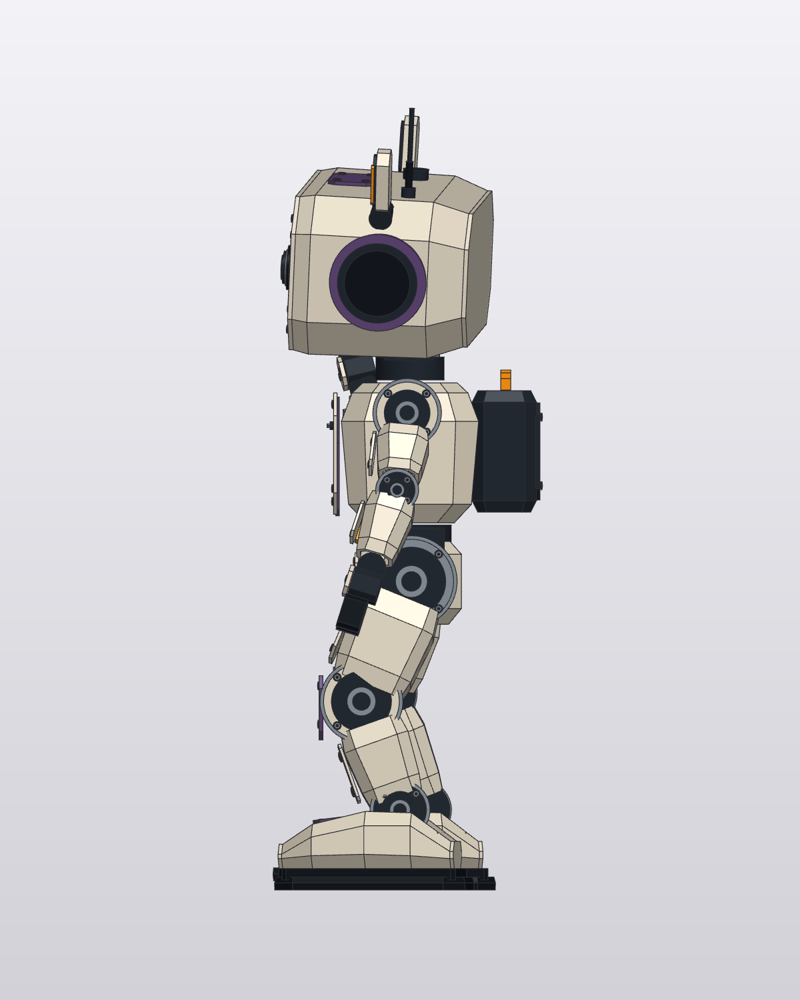
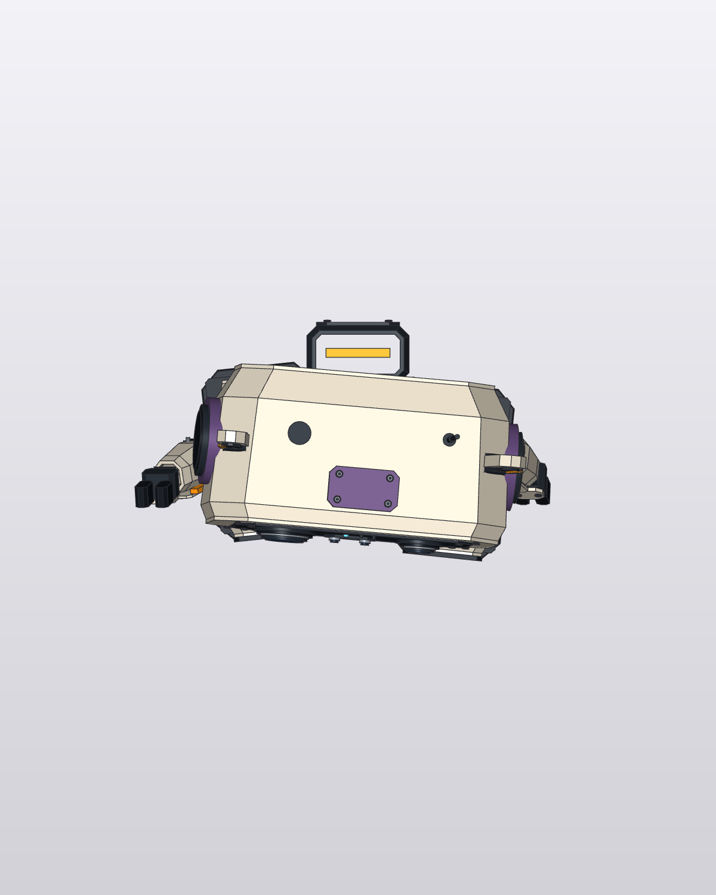

Native feature history, hollow enclosures, separate panels and STEP solids. Parameter changes, native reopen, STEP round trip and mesh topology checked. Mounts, hardware integration and walking remain unverified.